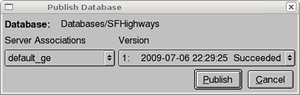

Publishing a database is the process of making a Google Earth Enterprise Fusion database available on a Google Earth Enterprise Server for viewing with Google Earth EC.
Note: This lesson assumes that Google Earth Enterprise Fusion, the Google Earth Enterprise Server, and Google Earth EC are all installed on your local workstation. If any of these applications are installed elsewhere on your network, adjust the instructions in this lesson accordingly.
After you define and build your database, publishing your database is a breeze!
The Publish Database dialog appears. The default server association (default_ge) is the only option on the Server Associations drop-down list. The most recent version of the selected database is the default selection on the Version drop-down list.

Note: If you get an error message, contact your Google Earth Enterprise Server administrator for help, or check the Google Earth Enterprise Administration Guide for more information.
After you publish your database, you can view it in Google Earth EC.
The Login dialog appears.
Caution: If you have logged in to this server with Google Earth EC previously, log out, clear your cache, and log back in. For help with clearing your cache, refer to the Google Earth User Guide.
Google Earth EC displays your database. The Layers panel shows the terrain, imagery, and vector layers in the database you published in the previous exercise.

This concludes the basic lessons in this tutorial. If you want to continue with the advanced lessons, you can work through them in any order you want. Alternatively, you can start working with real data now and come back and work through the advanced lessons as you need them. Be sure to use the Google Earth Enterprise Fusion Reference Guide often, as it contains much more detailed information than this tutorial.